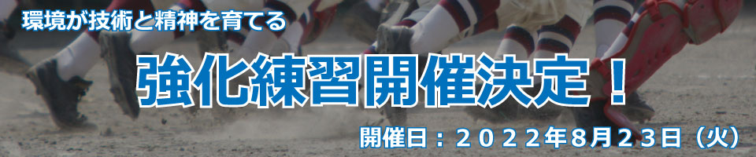

開催会場変更のお知らせ
森林公園第一野球場の予定でしたが、グラウンドコンデション不良が予想されるため、
小幡緑地西園野球場へ変更致します。
どなたでもご参加できます！
スクール生以外の方でもご参加できますので、この機会に是非ご利用下さい！
強化練習のご案内
保護者の皆様へ。
超大人気強化練習！お客様から「また開催してほしいです！」「もうやらないんですか？」等、沢山の嬉しいお言葉をいただき、この夏も一日限定の「強化練習」を開催することに決定致しました！！
何を
強化するのか？
野球の技術を伸ばすためには環境が大切となります。
そこで、沢山の人のプレーと触れ合い、刺激を貰うことによって、精神的成長や技術成長へ大きく繋がります！
成長の場それが「強化練習」です。
皆様のご参加、心よりお待ちしております。
強化練習/概要
| 名 称 | BSO野球上達塾・強化練習 |
|---|
| 内 容 | 打撃・守備・投球の指導 |
|---|
| 指 導 者 | BSO野球上達塾専門指導員 |
|---|
| 場 所 | 小幡緑地西園野球場 |
|---|
| 住 所 | 小幡緑地西園野球場（名古屋市守山区牛牧中山1632-1） |
|---|
| 対 象 | 小学生～中学生（スクール生以外の方も参加可能です）※軟式のみ |
|---|
| 募 集 数 | 定員25名まで ※１コマ５名以下の場合は開催いたしません。 |
|---|
| 開 催 日 | 2022年8月23日（火曜日） |
|---|
| 時 間 | ①9:00~12:00②13:00~16:00 |
|---|
| 持 ち 物 | バット・グローブ・水筒・スパイク等 |
|---|
| 服 装 | 野球の練習着（動きやすい恰好） |
|---|
| 申 込 期 限 | 2022年8月16日(火) 17時まで ※スクール外生のみお振込確認出来次第、お申込み完了となります。 |
|---|
| 受 講 料 |
スクール生 ￥2,200円（税込）
スクール生外 ￥2,700円（税込）
※スクール生外の方は振込となります。（事務局から請求メールが届きます） |
|---|
| 申込方法 | 052-715-3555こちらのお電話番号より、事務局へご連絡いただくか（受付時間 平日１０時～１７時）、下記申し込みフォームよりご応募ください。 |
|---|
| 注意事項 | 各時間帯とも先着順優先にて受付いたしますので、受付状況をご確認の上、お申込み下さい。
|
|---|
| そ の 他 | 天候不良で中止の場合は当日の朝7時頃にご連絡致します。（電話又はLINE@）
また、ホームぺージのINFORMATIONでお知らせ致します。
|
|---|
| お問合せ | BSO野球上達塾事務局
電話 052-715-3555（受付時間 平日１０時～１７時）
メール info@bsobb.net（２４時間受付） |
|---|